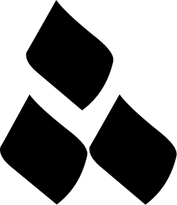

Nuqta
Nuqta, the Arabic word for dot, is one of the features of the Arabic written language. It is used for measuring letters to their right proportions. It also is a big part of the patterns created in Islamic art and used to decorate text.
↩
